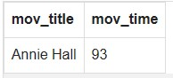

Coding Examples
Laravel Trait
trait SearchTrait
{
public function extractCommonWords($string){
$stopWords = array('i','a','about','an','and','are','as','at','be','by','vs','v','com','de','en','for','from','how','in','is','it','la','of','on','or'); //sample array of stop words
$acronyms = array('ca'=>'court of appeals','nlrc'=>'national labor relations commission','comelec'=>'commission on election', 'up' => 'university of the philippines' ); //sample array of acronymns used
$string = preg_replace('/\s\s+/i', '', $string); // replace whitespace
$string = trim($string); // trim the string
$string = preg_replace('/[^a-zA-Z0-9 -]/', '', $string); // only take alphanumerical characters, but keep the spaces and dashes too…
$string = strtolower($string); // lowercase
//put words in array
preg_match_all('/\b.*?\b/i', $string, $matchWords);
$matchWords = $matchWords[0];
//add acronym equivalent
foreach ( $matchWords as $key=>$item ) {
foreach ( $acronyms as $short=>$long ) {
if (strcmp($item,$short) == 0 ) {
$acroWords = explode(" ",$long);
foreach($acroWords as $acroWord){
array_push ($matchWords, $acroWord);
}
}
}
}
//remove all stop words, empty matches and single letters
foreach ( $matchWords as $key=>$item ) {
if ( $item == '' || in_array(strtolower($item), $stopWords) || strlen($item) <= 1 ) {
unset($matchWords[$key]);
}
}
$wordCountArr = array();
if ( is_array($matchWords) ) {
foreach ( $matchWords as $key => $val ) {
$val = strtolower($val);
if ( isset($wordCountArr[$val]) ) {
$wordCountArr[$val]++;
} else {
$wordCountArr[$val] = 1;
}
}
}
arsort($wordCountArr);
return $wordCountArr;
}
This function filters out unnecessary stop words and replaces acronymns with equivalent values. It is essential as it makes the search string produce more relevant results. The function first removes whitespace and non-alphanumeric characters, then puts words in an array and loops through it to replace the acronymns, then do another loop to remove stop words (and 1 letter words). The last and final loop is used to count the number of occurance of a keyword and store it in an associative array. Finally a sorted array is returned based on the number of occurance of the keyword. I placed this method inside a Laravel Trait so that it can be reused across all controllers by simply including the trait 'SearchTrait'.
Eloquent Query with Elastic Search
public function index(Request $request)
{
// Convert special characters to HTML entities
$keyword = htmlspecialchars($request->keyword);
$ponente = htmlspecialchars($request->ponente);
$gr_no = htmlspecialchars($request->gr_no);
$gteyear = htmlspecialchars($request->gteyear);
$lteyear = htmlspecialchars($request->lteyear);
$sort = ($request->sort) ? $request->sort: 0;
$order = $this->getOrder($sort);
$filtered = $this->filtered = $this->isFiltered($request);
$this->keyword = 0;
$numberOfEntries = 10;
// Define the search rules for Elastic Search
if($keyword || $filtered){
$selectfields = ['id','title', 'ponente', 'gr_no','decision_date','search_title','common_title','slug','landmark','cited_last','cited_count','views'];
$this->search_rules = array();
if($keyword){
$this->search_rules[] = array(
'match' => [
'title' => [
'query' => $keyword,
'boost' => 3,
]
]
);
}
if($gr_no){
$this->search_rules[] = array(
'match' => [
'gr_no' => [
'query' => $gr_no,
'boost' => 3
]
]
);
}
if($ponente){
$this->search_rules[] = array(
'match' => [
'ponente' => [
'query' => $ponente,
'boost' => 3
]
]
);
}
if($gteyear || $lteyear){
$this->search_rules[] = array(
'range' => [
'decision_date' => [
'gte' => $gteyear."||/y",
'lte' => $lteyear."||/y",
'format' => "yyyy"
]
]
);
}
// Apply Search Rule
if($keyword){
$query = Decision::search($keyword)->select($selectfields)
->rule(function($builder) {
return [
($this->keyword && $this->filtered) ? 'must':'should' =>
[ $this->search_rules
]
];
});
}
else {
$query = Decision::search(' ')->select($selectfields)
->rule(function($builder) {
return [
'must' =>
[ $this->search_rules
]
];
});
}
if($sort)
{ $sort = $this->getSortKeyword($sort);
$query = $query->orderBy($sort, $order);
}
$decisions = $query->paginate($numberOfEntries)->appends('sort',$request->sort)->appends('keyword',$keyword)->appends('ponente',$ponente)->appends('gteyear',$gteyear)->appends('lteyear',$lteyear);
}
return view('frontend.decisions.index',['decisions' => $decisions,'keyword' => $keyword,'gr_no' => $gr_no,'ponente' => $ponente]);
}
The function shown above is a trimed version of the index page controller for Decisions (Court Case Decisions). The search form on the page has a keyword field and other fields to filter the results such as ponente, gr_no and decision date. Special characters that are submitted are converted to HTML entities. Then search rules are defined based on which fields have values. The search rules are then applied to the Model using the search() method followed by the select() method. The function returns the index view containing the paginated decisions and previous entries
SASS Mixin
@mixin triangle($color: null, $size: 90px) {
width: 0;
height: 0;
content: '';
z-index: 1;
border-style: solid;
border-width: 35px $size 0;
z-index:4;
@if($color != null){
border-color: $color transparent transparent;
}
}
This is a simple example of a reusable mixin in SASS which I call on other class styles. I added a size parameter to accomodate different widths and also color for custom colors as needed.
Simple SQL Subquery
The objective of this simple SQL sub-query is to find all movies of type comedy which only run 2 hours or less, it should display the movie title and run-time columns.
SELECT mov_title, mov_time FROM movie
WHERE mov_id IN(
SELECT mov_id FROM movie_genres
WHERE gen_id IN (
SELECT gen_id FROM genres
WHERE gen_title = 'Comedy')
)
AND mov_time <= 120
Breakdown: On the innermost select statement, I simply retrieved the gen_id of 'Comedy' from the genres table. I then used that gen_id to get all the movies that have that genre from the movie_genres table. On the last query, I used all the mov_ids to get the titles and mov_times, and also where I used the mov_time to filter out movies that are greater than 120 minutes (2 hours).

Result: After running the SQL code on the online editor, this is the result.

Database: This is the database from w3resource for reference.